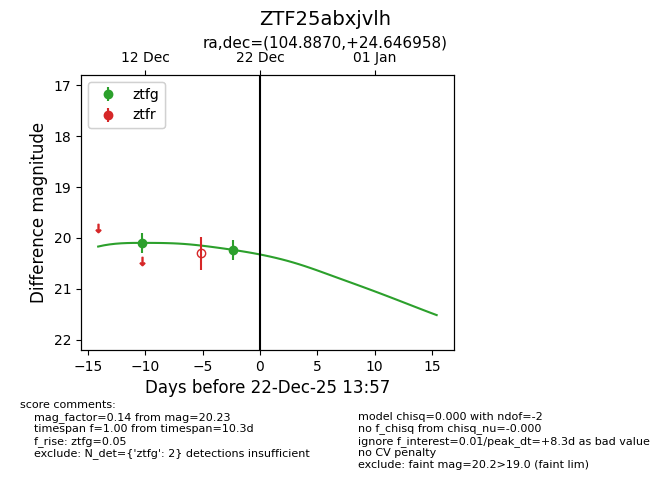
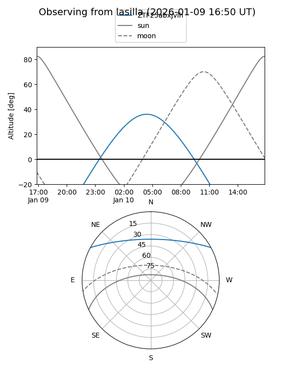
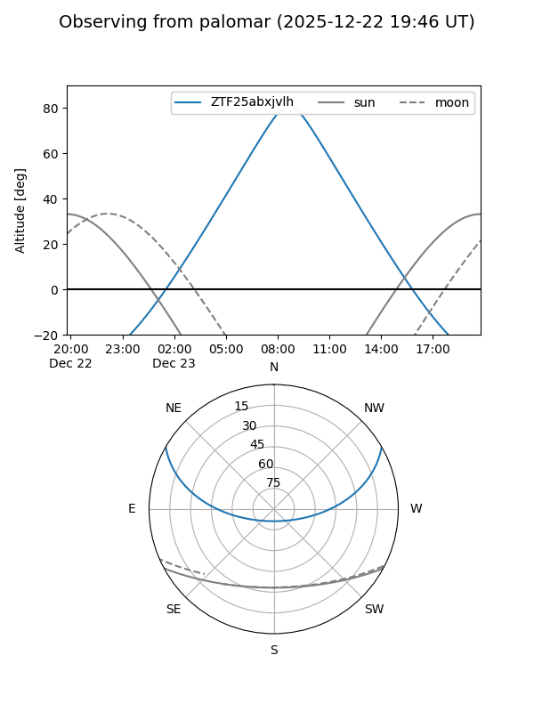

ZTF25abxjvlh
Target ZTF25abxjvlh at 2025-12-22 17:56
Aliases and brokers:
FINK: fink-portal.org/ZTF25abxjvlh
Lasair: lasair-ztf.lsst.ac.uk/objects/ZTF25abxjvlh
ALeRCE: alerce.online/object/ZTF25abxjvlh
alt names
ZTF25abxjvlh (ztf,fink_ztf)
Coordinates:
equatorial (ra, dec) = 104.8870,+24.64696
equatorial (HMS+DMS) = 06:59:32.87,+24:38:49.05
galactic (l, b) = (191.5037,+12.63712)
Flags:
Photometry:
last ztfg=20.12
3 ztfg detections
Lightcurve

Visibility


Additional plots